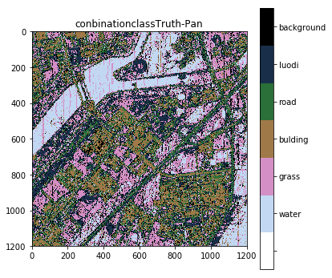
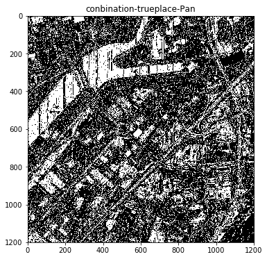
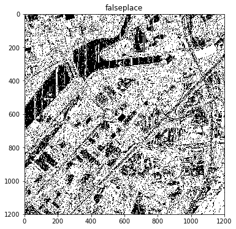

In [1]:
import sklearn
from PIL import Image
import skimage.io as SKimg
import numpy as np
import matplotlib.pyplot as plt
import scipy.io as sio
import time
import pandas as pd
import MatrixNeighborhood as MNB
import ALLNeighborhoodrelationship as ANBHR
In [2]:
Tpan =SKimg.imread("F:/pythontestdata/MyTiff/tianhui1200pan.tif")
SKimg.imshow(Tpan)
SKimg.show()
Tpan.shape

Out[2]:
(1200, 1200)
In [3]:
#matlab文件名
matfn='gt_tianhui1200.mat';
data=sio.loadmat(matfn);
mk = data['gt']
print(mk)
moban=(mk*0)+1;
plt.figure(figsize=(6,6))
im = Image.fromarray(mk);
plt.imshow(im,cmap=plt.cm.get_cmap('cubehelix_r',7));
cbar=plt.colorbar()
cbar.set_ticks(np.linspace(0,7,8))
cbar.set_ticklabels((' ','water','grass','bulding','road','luodi','background'))
plt.clim(-0.5,6.5)
plt.show();
[[6 6 4 ..., 6 6 6]
[6 6 6 ..., 6 6 6]
[6 6 6 ..., 6 6 6]
...,
[3 3 3 ..., 2 2 2]
[6 3 3 ..., 2 2 2]
[6 3 3 ..., 2 2 2]]

In [4]:
NEWclassLabel=MNB.NewClassLabel(mk);
NewTpan=ANBHR.TwoPixcel();
ALLzuheLABEL=np.unique(NEWclassLabel,return_index=True,return_inverse=True,return_counts = True)[0];
In [5]:
ALLUvalue=np.unique(NewTpan,return_index=True,return_inverse=True,return_counts = True)[0];
ALLUinverse=np.unique(NewTpan,return_index=True,return_inverse=True,return_counts = True)[2];
LenthofALLunique=len(ALLUvalue);
ALLfinalF=[];
for i in range(0,len(ALLzuheLABEL)):
TF=(NEWclassLabel==ALLzuheLABEL[i]);
TempMask=TF*NewTpan;
usefulValue=TempMask[TF];
Uvalue=np.unique(usefulValue,return_index=True,return_inverse=True,return_counts = True)[0];
Uinverse=np.unique(usefulValue,return_index=True,return_inverse=True,return_counts = True)[2];
Ufrence=(np.unique(usefulValue,return_index=True,return_inverse=True,return_counts = True)[3])/len(usefulValue);
fram1=pd.DataFrame({'id':ALLUvalue});
fram2=pd.DataFrame({'id':Uvalue,'F':Ufrence});
MEge=pd.merge(fram1,fram2,on='id',how='outer');
MegeFILL=MEge.fillna({'F':0.0});
finalF=np.array(MegeFILL['F']);
ALLfinalF.append(finalF);
In [6]:
LastLabel=np.zeros(LenthofALLunique);
for j in range(0,LenthofALLunique):
MAXP=0; maxindex=0; tempF=[];
for h in range(0,len(ALLfinalF)):
tempF.append(ALLfinalF[h][j]);
for k in range(0,len(tempF)):
if(tempF[k]>MAXP):
MAXP=tempF[k]
maxindex=ALLzuheLABEL[k];
LastLabel[j]=maxindex;
NewLastLabe=LastLabel[ALLUinverse];
import math
finaLabel=mk-2;
for HL in range(0,len(NewLastLabe)):
h=math.floor(HL/1200); l=HL%1200;
finaLabel[h][l]=math.floor(NewLastLabe[HL]/10);
In [7]:
mylabel36=mk-2;
for HL in range(0,len(NewLastLabe)):
h=math.floor(HL/1200); l=HL%1200;
mylabel36[h][l]=math.floor(NewLastLabe[HL]);
plt.figure();
for LabelNumber in range(0,len(ALLzuheLABEL)):
plt.subplot(6,5,LabelNumber+1);
im2 = Image.fromarray(ALLzuheLABEL[LabelNumber]*(ALLzuheLABEL[LabelNumber]==mylabel36));
plt.imshow(im2,cmap='cool_r');
#cbar=plt.colorbar()
plt.title(ALLzuheLABEL[LabelNumber]);
plt.show();

In [8]:
# 成图展示
mylabel=finaLabel;
print(mylabel)
plt.figure(figsize=(6,6))
im2 = Image.fromarray(mylabel);
plt.imshow(im2,cmap=plt.cm.get_cmap('cubehelix_r',7));
cbar=plt.colorbar()
cbar.set_ticks(np.linspace(0,7,8))
cbar.set_ticklabels((' ','water','grass','bulding','road','luodi','background'))
plt.clim(-0.5,6.5)
plt.title('conbinationclassTruth-Pan');
plt.show();
[[1 2 6 ..., 2 2 5]
[2 5 6 ..., 2 2 5]
[2 5 1 ..., 2 2 2]
...,
[3 3 3 ..., 1 1 1]
[6 4 6 ..., 1 1 1]
[6 5 3 ..., 1 1 1]]

In [9]:
TrueOrFalse=(mylabel==mk)
TrueValue=TrueOrFalse[TrueOrFalse>0]
FalseValue=TrueOrFalse[TrueOrFalse==0]
correct=len(TrueValue)/(len(TrueValue)+len(FalseValue));
print(len(TrueValue)); print(len(FalseValue)); print(correct);
492373
947627
0.34192569444444443
In [10]:
TRUEplace=(mylabel==mk)*10000;
FalsePlace=(mylabel!=mk)*10000;
plt.figure(figsize=(6,6))
imT = Image.fromarray(TRUEplace);
plt.imshow(imT,cmap='Oranges');
plt.title('conbination-trueplace-Pan');
plt.show();
plt.figure(figsize=(6,6))
imF = Image.fromarray(FalsePlace);
plt.imshow(imF,cmap='Reds');
plt.title('falseplace');
plt.show();

